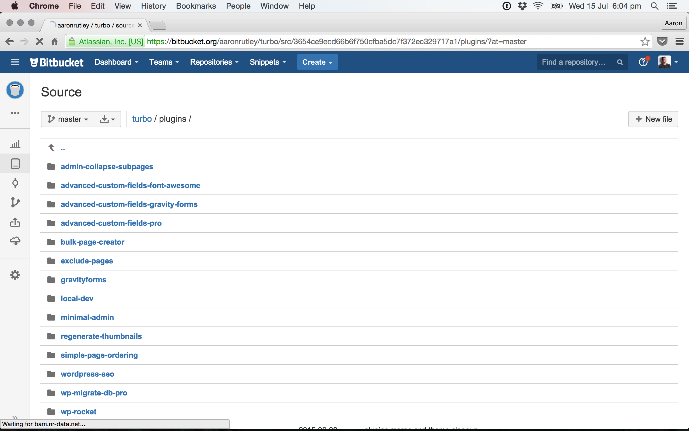

Workflow Tips
For WordPress Theme Developers
@aaronrutley
Tip #1
Create a starter repo
my starter repo
Include plugins used on local & production
Include your starter theme
Tip #2
Create a local dev plugin
My local wp-config
define('LOCAL_URL', 'http://mysite.dev.au');
define('REMOTE_URL', 'http://mysite.com.au');
define('LOCAL_LIVE_RELOAD', true);
define('LOCAL_IMAGE_PROXY', true);Admin bar before
Admin bar after
Tip #3
Switch to VVV
(varying vagrant vagrants)
VVV project on GitHub
https://github.com/Varying-Vagrant-Vagrants/VVVVV Site Wizard
https://github.com/bradp/vvVVV dashboard
https://github.com/leogopal/VVV-DashboardMore reasons to use VVV
Ideal for lots of small projects
Blueprint feature
WP-CLI built in
phpMyAdmin built in
Auto backup DBs on halt
Tip #4
Use Migrate DB Pro
Takes care of the serialised data
https://deliciousbrains.com/wp-migrate-db-pro/Easily pull a database down
Easily push a database up
Tip #5
Checkout Dash
Offline docs for WordPress
 https://kapeli.com/dash
https://kapeli.com/dash
offline docs for everything
Tip #6
Save time with a Task Runner
Grunt or Glup
Compile Sass with LiveReload
Concatenate and minify CSS & JS
Generate sprites and compress images
My current gulp setup
Tip #7
Deploy via GIT
Beanstalk
beanstalkapp.comDeploy HQ
deployhq.comDeploy Bot
deploybot.comVia a WP PLugin : GitHub Updater
github.com/afragen/github-updaterTip #8
Automate Git Commands
$ gc
#pseudocode
git status -s
git add --all :/
read commit_message
git commit -am "$commit_message"
git push
aaronrutley.com/handy-git-aliases
Tip #9
Automate your workspace
Open your text editor or IDE
Start Gulp or Grunt 'Watch'
Run git status or git pull
Start Vagrant / VVV
$ start project turbo.dev
#pseudocode
cd ~/vvv/www/turbo.dev
run start.sh script
cd ~/vvv/www/my-repo-dir
git pull
cd ~/vvv/www/my-theme-dir
open theme folder in sublime
gulp watch
vagrant up
open http://turbo.dev
Tip #10
Use Alfred Workflows
Quick access to Dash Docs & your Gists
Convert Colours HEX to RGB
Easily find font awesome icons
Alfred workflows
http://aaronrutley.com/?p=2589